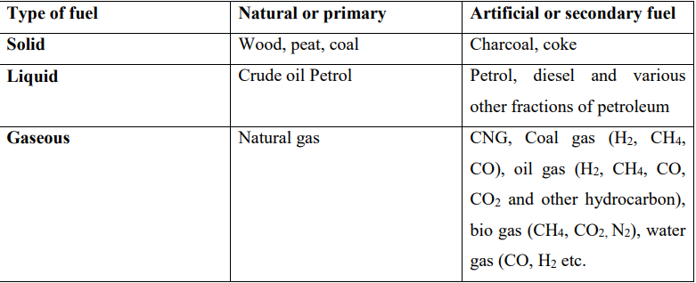
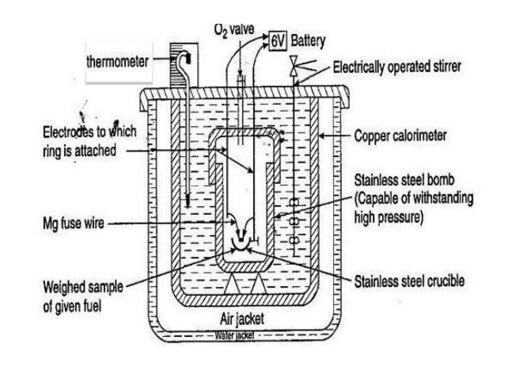

Chemistry
Fuels
Introduction:-
Fuels are the main energy sources for industry and domestic purposes.
“A fuel is a substance containing carbon as the major substituent which provides energy on
combustion for industry and domestic purposes”.
The combustion is the process of oxidation that provides heat energy. Every combustion is an
oxidation but not every oxidation is combustion.
Ex: - Combustion of wood, Petrol and kerosene gives heat energy.
Some other energy resources like nuclear fuel (U and Pu) and solar energy are used for the
production of electricity. The broad definition of fuel is:
“Any substance that provide heat, electricity and other form of energy that can be used for
industrial and domestic purposes”

Classification of Fuels:-
Classification of fuels is based on two factors.
1. Occurrence (and preparation)
2. The state of aggregation
Based on occurrence, the fuels are further divided into two types.
A. natural or primary fuels: - These are found in nature such as Wood, peat, coal, petroleum,
natural gas etc.
B. artificial or secondary fuels: - These are prepared artificially from the primary fuels. Ex: -
charcoal, coke, kerosene, diesel, petrol, coal gas, LPG, CNG etc.
The second classification is based upon their state of aggregation like:
a) Solid fuels
b) Liquid fuels
c) Gaseous fuels.
Type of fuel Natural or primary Artificial or secondary fuel
Solid Wood, peat, coal Charcoal, coke
Liquid Crude oil Petrol Petrol, diesel and various
other fractions of petroleum
Gaseous Natural gas CNG, Coal gas (H2, CH4,
CO), oil gas (H2, CH4, CO,
CO2 and other hydrocarbon),
bio gas (CH4, CO2, N2), water
gas (CO, H2 etc.
Characteristics of a good fuel:-
1. The fuel should have high calorific value.
2. It must have moderate ignition temperature, as low ignition temperature is harmful for
storage while high ignition temperature causes difficulties in ignition of fuel.
3. Must contain low noncombustible matter.
4. The fuel should be easily available.
5. Burn in air with less smoke.
6. It should be dry and should have less moisture content. Dry fuel increases its calorific
value.
7. It should be cheap, easily transportable
8. The combustion speed of a good fuel should be moderate.
9. Its handling should be easy and should not give poisonous gases after combustion.
10. The combustion should not pollute the environment.
Calorific value:
The prime property of a fuel is its capacity to supply heat. Fuels essentially consist of carbon,
hydrogen, oxygen and some hydrocarbons and the heat that a particular fuel can give is due to the
oxidation of carbon and hydrogen. Normally when a combustible substance burns the total heat
depends upon the quantity of fuel burnt, its nature, air supplied for combustion and certain other
conditions governing the combustion. Further the heat produced is different for different fuels and
is termed as its calorific value.
Calorific value of a fuel may be defined as “the total quantity of heat liberated, when a unit mass
(or volume) of a fuel is burnt completely”.
Or
“Calorific value is the amount of heat liberated by the complete combustion of a unit weight of
the fuel and in usually expressed as cal gm-1
or kcal gm-1
or B.Th.U.
Or
The calorific value of a fuel can be defined as “the total quantity of heat liberated when a unit
mass of the fuel is completely burnt in air or oxygen”.
There are different units for measuring the quantity of heat. They are:
1. Calorie 3. British thermal unit (B.Th.U)
2. Kilocalorie 4. Centigrade heat unit (C.H.U)
1. Calorie: It is the amount of heat required to increase the temperature of 1 gram of water through
one degree centigrade.
2. Kilocalorie: This is the unit of heat in metric system, and is defined as the quantity of heat
required to raise the temperature of one kilogram of water through one degree centigrade.
3. British thermal unit (B.Th.U): This is the unit of heat in English system, it is defined as “the
quantity of heat required to increase the temperature of one pound of water through of one degree
of Fahrenheit.
4. Centigrade heat unit (C.H.U): It is the quantity of heat required to raise the temperature of
one pound of water through one degree centigrade.
Types of Calorific Values
1. Gross Calorific Value (GCV) or High Calorific Value (HCV)
Gross calorific value is the heat liberated when a unit quantity of fuel is completely burnt and the
products of combustion are cooled to room temperature. This heat includes the latent heat of
condensation of water vapour. Because when a fuel containing hydrogen is burnt, the hydrogen
present is converted to steam. As the products of combustion are cooled to room temperature, the
steam gets condensed into water and the latent heat is evolved. Thus the latent heat of condensation
of steam, so liberated, is included in the gross calorific value.
Higher calorific value (HCV) or gross calorific value is defined as the total amount of heat
liberated, when unit mass or unit volume of the fuel has been burnt completely and the products
of combustion are cooled down to 15 0C.
2. Net Calorific Value (NCV) or Low Calorific Value (LCV)
Low calorific value is defined as “the net heat produced, when unit mass or unit volume of the fuel
is burnt completely and the combustion products are allowed to escape.
Net calorific value is the gross calorific value excluding the latent heat of condensation of water
(the weight of water formed is nine times the weight of hydrogen in the fuel).
H2 + ½ O2 H2O
2 g 18 g
1 g 9 g
Therefore,
LCV or NCV = HCV or GCV – Latent heat of condensation of water vapor formed
Net calorific value = Gross calorific value – (Mass of hydrogen per weight of fuel burnt × 9
× Latent heat of condensation of water vapor).
Latent heat of condensation of steam is 587 kcal/g.
NCV or LCV = GCV or HCV – 9 × H × 587
If H is given in percentage then:
NCV or LCV = GCV or HCV – 0.09 × H% × 587
HCV of fuel is calculated by Bomb Calorimeter.
Determination of calorific value by using Bomb
Calorimeter
This calorimeter is used in finding the high calorific value of solid and liquid fuels:
Principle:
A known mass of the fuel is burnt and the quantity of heat produced in water and measured. Then
the quantity of heat produced by burning a unit mass of the fuel is calculated.
Construction:
A simple sketch of bomb calorimeter is shown in the figure. It consists of a strong cylindrical
stainless steel bomb (can resist high pressure) in which the combustion of the fuel is made to take
place. The bomb has a lid, which can be screwed to body of a bomb, as to make a perfect gas-tight
seal. The lid is provided with two stainless steel electrodes and an oxygen inlet valve. To one of
the electrodes, a small ring is attached. In this ring, a nickel or a stainless steel crucible can be
supported. The bomb is placed in a copper calorimeter, which is surrounded by an air-jacket and
water-jacket to prevent heat loss due to radiation. The calorimeter is provided with an electrically
operated stirrer and beckmann's thermometer, which can read accurately temperature difference
up to 0.01 oC.

Working:
A known mass (about 0.5 to 1.0 g) of the fuel is taken in the clean crucible. The crucible is then
supported over the ring. A fine magnesium wire, touching the fuel sample, is the stretched across
the electrodes. The bomb lid is tightly screwed and bomb filled with oxygen to 25 atmospheric
pressure. The bomb is then lowered into copper calorimeter, containing a known mass of water.
The stirrer is worked and the initial temperature of water is noted. The electrodes are then
connected to a 6-volt battery and circuit is completed. The sample burns and heat is liberated.
Uniform stirring of water is continued and maximum temperature attained is recorded.
Calculation:
Let, x = mass in g of fuel sample taken in crucible
W = mass of water in the calorimeter;
w = water equivalent in g of calorimeter, stirrer, thermometer, bomb, etc.
t1 = initial temperature of water in calorimeter
t2= final (maximum) temperature of water in calorimeter
L= higher calorific value in fuel in cal/g.
Heat liberated by burning fuel = x L
Heat gained by water = W × (t2 – t1)
Heat gained by calorimeter = w × (t2 – t1)
Heat gained by (water + calorimeter) = (W + w) × (t2 – t1)
In ideal condition:
Heat liberated by burning fuel = Heat gained by (water + calorimeter)
i.e.
x. L = (W + w) × (t2 – t1)
𝐋 =
(𝐖 + 𝐰) × (𝐭𝟐 − 𝐭𝟏)
𝐱
Where L is GCV or HCV.
7
For more accurate result the following correction should be incorporated in the above equation:
𝐆𝐂𝐕 =
(𝐖 + 𝐰) × (𝐭𝟐 − 𝐭𝟏 + 𝐭𝐜
) − (𝐭𝐚 + 𝐭𝐟 + 𝐭𝐭)
𝐱
Where,
tc = cooling correction
ta = acid correction
tf = fuse wire correction
tt = cotton correction
Cooling Correction:
As the temperature rises above the room temperature, some heat will be lost
due to radiation and the highest temperature recorded will be slightly lesser than that recorded.
If the time taken for the water in the calorimeter to cool from the maximum temperature to room
temperature is x min. and the rate of cooling is dto
per min.
Then cooling correction = x × dto
Acid correction:
During combustion, sulphur and nitrogen if present in the fuel are oxidized to
the corresponding acids along with the evolution of heat.
S + 2H + 2O2 H2SO4 + Heat
2N + 2H + 3O2 2HNO3 + Heat
This heat is also included in the measurement of heat, hence it must be subtracted.
Fuse-wire Correction: The measured heat also includes the heat given by the ignition of the
fuse wire and hence must be subtracted from the total value.
Cotton thread Correction: Small amount of cotton is used to initiate the combustion of fuel.
The measured heat also includes the heat given by the combustion of cotton and hence must be
subtracted from the total value.